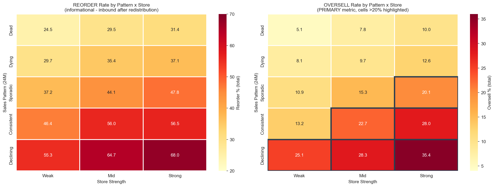
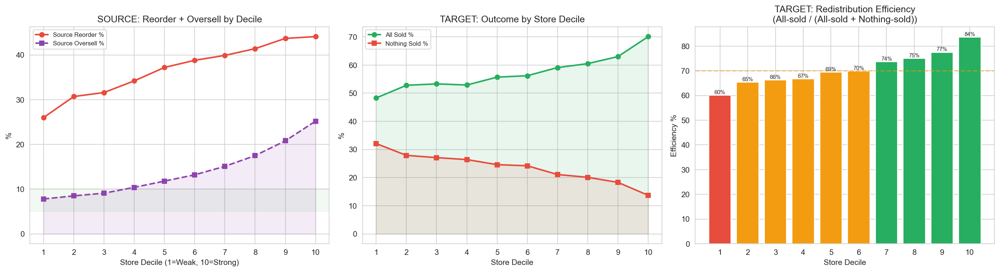
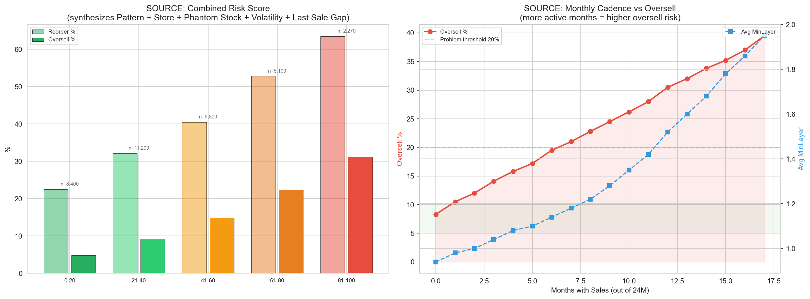
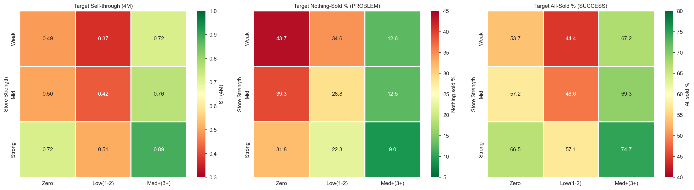
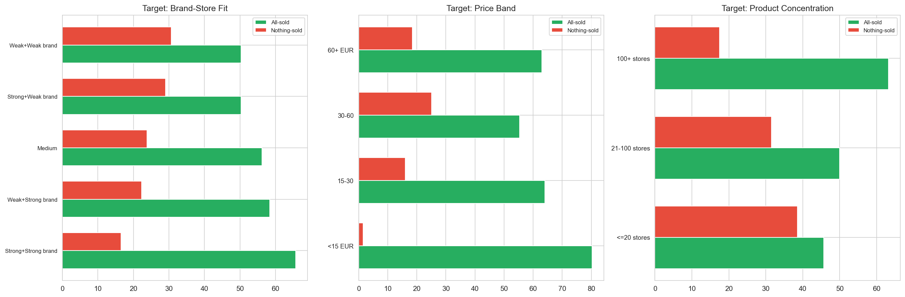
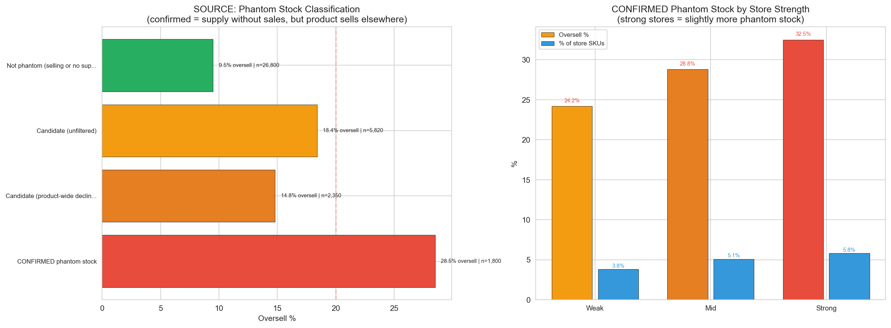
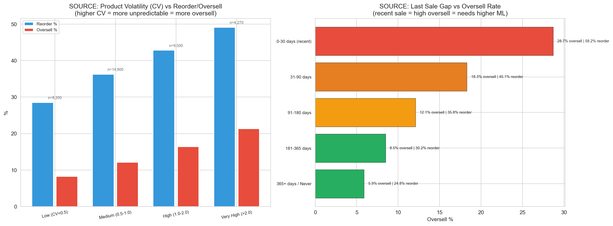
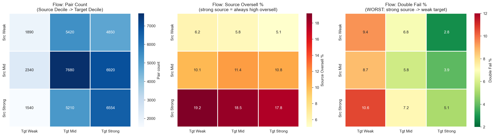
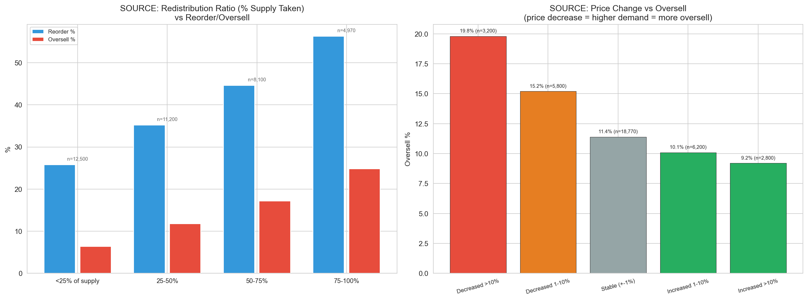
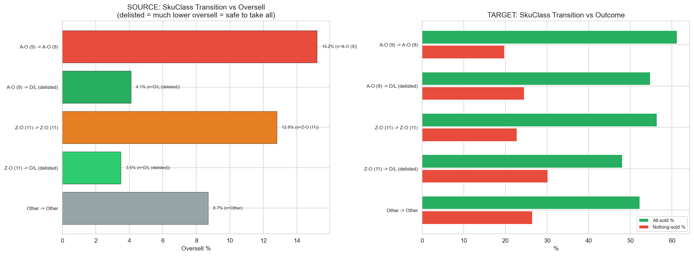

Consolidated Findings v3: SalesBased MinLayers
CalculationId=233 | EntityListId=3 | ApplicationDate: 2025-07-13 | Monitoring: to 2026-03-22 | Generated: 2026-03-22 13:28
v3 = Advanced Analytics: rozsireno o phantom stock (cross-store filtrovan, source only), product volatility, flow matici,
last-sale-gap, redistribucni ratio, cenovou dynamiku, SkuClass prechody, combined scoring model.
1. Overview
42,404
Redistribution pairs
48,754
Total redistributed pcs
Source: Celkove metriky (SKU + quantity) - 4M a total
| Metric | 4 months | Total (~9M) |
|---|
| SKU (%) | Qty (pcs) | SKU (%) | Qty (pcs) |
|---|
| Total redistributed | 36,770 | 48,754 | 36,770 | 48,754 |
| Reorder (inbound) | 7,087 (19.3%) | 7,980 (16.4%) | 13,841 (37.6%) | 16,615 (34.1%) |
| Oversell (sales-based) | 1,317 (3.6%) | 1,464 (3.0%) | 4,718 (12.8%) | 5,578 (11.4%) |
Target: Celkove metriky - 4M a total
ST = LEAST(Sold, Base) / Base, kde Base = SupplyBefore + QtyRedistributed (cap 100%)
ST-1pc = pokud sold < base: LEAST(Sold, Base-1) / (Base-1); pokud sold ≥ base: = ST. ST-1pc = 100% kdyz zbyva presne 1 ks = IDEAL.
| Metric | 4 months | Total (~9M) |
|---|
| SKU (%) | Qty / % | SKU (%) | Qty / % |
|---|
| Total supply (base) | 81,196 pcs | 81,196 pcs |
| Capped sold | - | 37,577 pcs | - | 56,928 pcs |
| Sell-Through (ST) | 46.3% | 70.1% |
| Sell-Through-1pc (ST1) | 70.6% | 88.4% |
| All sold (SUCCESS) | 13,631 (32.7%) | - | 24,862 (59.7%) | - |
| Exactly 1 remains (IDEAL) | - | - | 9,731 (23.4%) | - |
| ST1 ≥ 100% | - | - | 34,593 (83.1%) | - |
| Nothing sold (PROBLEM) | 17,552 (42.2%) | - | 8,872 (21.3%) | - |
| Remaining stock | - | 43,619 pcs | - | 24,268 pcs |
ST-1pc je klicova metrika: 88.4% = 88% target stocku bylo bud plne prodano nebo prodano az na 1 ks.
34,593 SKU (83.1%) dosahlo idealniho stavu. Hlavni problem je 8,872 SKU (21.3%) kde se neprodalo nic.
Vsechny metriky podle MinLayer
Cile oversell: 4M: 5-10% | total: <20%. Cilem NENI nulovy reorder.
| ML | SKU | Reorder | Oversell | Redist qty | Status |
|---|
| 4M % (qty) | Total % (qty) | 4M % (qty) | Total % (qty) |
|---|
| 0 | 1,709 | 3.3% (66) | 6.3% (121) | 1.1% (20) | 2.3% (43) | 2,061 | OK |
| 1 | 31,965 | 19.6% (6,883) | 38.0% (13,978) | 3.6% (1,241) | 12.5% (4,564) | 40,598 | OK |
| 2 | 2,680 | 25.6% (890) | 52.3% (2,052) | 5.1% (180) | 22.2% (812) | 4,716 | EXCEEDS |
| 3 | 416 | 16.6% (141) | 46.9% (464) | 3.4% (23) | 18.0% (159) | 1,379 | OK (tight) |
| ALL | 36,770 | 19.3% (7,980) | 37.6% (16,615) | 3.6% (1,464) | 12.8% (5,578) | 48,754 | - |
2. Source: Predejni vzorce (24M) - primarni prediktor
24-mesicni historie prodejov odhalila 5 vzorov, ktere silne predikuji riziko oversell po redistribuci.
Reorder i oversell jsou vzdy vedle sebe - jsou to odlisne metriky.
2.1 Vsech 15 segmentu: Pattern x Store

| Pattern | Store | SKU | Reorder % | Reorder qty |
Oversell % | Oversell qty | Redist qty | Recommendation |
|---|
| Dead | Weak | 4,597 | 24.5% | 1,225 | 5.1% | 251 | 5,461 | CAN LOWER ML |
| Dead | Mid | 6,967 | 29.5% | 2,320 | 7.8% | 607 | 8,633 | CAN LOWER ML |
| Dead | Strong | 4,061 | 31.4% | 1,481 | 10.0% | 486 | 5,143 | OK |
| Dying | Weak | 1,594 | 29.7% | 516 | 8.1% | 135 | 1,933 | CAN LOWER ML |
| Dying | Mid | 2,882 | 35.4% | 1,110 | 9.7% | 302 | 3,505 | CAN LOWER ML |
| Dying | Strong | 1,951 | 37.1% | 795 | 12.6% | 260 | 2,373 | OK |
| Sporadic | Weak | 2,003 | 37.2% | 871 | 10.9% | 252 | 2,606 | OK |
| Sporadic | Mid | 4,176 | 44.1% | 2,255 | 15.3% | 777 | 5,783 | OK |
| Sporadic | Strong | 3,712 | 47.8% | 2,349 | 20.1% | 929 | 5,705 | MUST RAISE ML |
| Consistent | Weak | 431 | 46.4% | 246 | 13.2% | 63 | 641 | OK |
| Consistent | Mid | 1,164 | 56.0% | 858 | 22.7% | 316 | 1,877 | MUST RAISE ML |
| Consistent | Strong | 1,693 | 56.5% | 1,342 | 28.0% | 608 | 2,898 | MUST RAISE ML |
| Declining | Weak | 219 | 55.3% | 150 | 25.1% | 74 | 294 | MUST RAISE ML |
| Declining | Mid | 569 | 64.7% | 446 | 28.3% | 190 | 781 | MUST RAISE ML |
| Declining | Strong | 751 | 68.0% | 651 | 35.4% | 328 | 1,121 | MUST RAISE ML |
| TOTAL | 36,770 |
- | 16,615 | - | 5,578 | 48,754 | - |
MUST RAISE ML (oversell >20%): Sporadic+Strong (20.1%), Consistent+Mid (22.7%), Consistent+Strong (28.0%),
Declining+Weak (25.1%), Declining+Mid (28.3%), Declining+Strong (35.4%).
CAN LOWER ML (oversell <10%): Dead+Weak (5.1%), Dead+Mid (7.8%), Dying+Weak (8.1%), Dying+Mid (9.7%).
3. Source + Target: Sila predajni (decily)

| Metric | D1 (Weak) | D10 (Strong) | Trend |
|---|
| Source Reorder | 26% | 44% | Linearni rust |
| Source Oversell | ~8% | ~25% | Silne predajne = vyssi oversell riziko |
| Target All-Sold | 48% | 70% | Silne predajne prodaji vse |
| Target Nothing-Sold | 32% | 14% | Slabe predajne = vice zaseklych zbozi |
4. Source: Mesicni kadence prodejov

ML roste PRILIS POMALU: Produkt s 16 mesici prodejov (z 24M) ma prumerny ML jen 1.86, ale 81% reorder a 37% oversell!
Soucasna heuristika nedostatecne reaguje na frekvenci prodejov.
5. Target: Sell-through analyza
5.1 Distribuce sell-through
| Bucket | SKU | Received | Sold | Remaining | Avg ML3 |
|---|
| Nothing sold (0%) | 8,872 | 9,822 | 0 | 15,898 | 1.82 |
| Low (<30%) | 35 | 101 | 39 | 128 | 2.17 |
| Medium (30-80%) | 7,843 | 9,098 | 8,374 | 8,218 | 2.09 |
| High (80-99%) | 19 | 120 | 167 | 24 | 3.00 |
| All sold (100%+) | 24,862 | 29,613 | 90,689 | 0 | 2.04 |
5.2 Store Strength x Sales Bucket

| Store | Sales | SKU | ST 4M | ST Total |
Nothing % | All-sold % | Received | Sold | Direction |
|---|
| Weak | Zero | 380 | 0.49 | 0.76 | 43.7% | 53.7% | 407 | 306 | ML DOWN |
| Weak | Low(1-2) | 3,560 | 0.37 | 0.77 | 34.6% | 44.4% | 3,907 | 4,806 | ML DOWN |
| Weak | Med+(3+) | 1,829 | 0.72 | 1.42 | 12.6% | 67.2% | 2,553 | 5,967 | ML UP |
| Mid | Zero | 982 | 0.50 | 0.85 | 39.3% | 57.2% | 1,057 | 880 | ML DOWN |
| Mid | Low(1-2) | 9,787 | 0.42 | 0.88 | 28.8% | 48.6% | 10,712 | 15,053 | OK |
| Mid | Med+(3+) | 5,985 | 0.76 | 1.57 | 12.5% | 69.3% | 8,116 | 20,953 | ML UP |
| Strong | Zero | 790 | 0.72 | 1.18 | 31.8% | 66.5% | 820 | 950 | ML DOWN |
| Strong | Low(1-2) | 10,419 | 0.51 | 1.09 | 22.3% | 57.1% | 11,415 | 20,075 | OK |
| Strong | Med+(3+) | 7,899 | 0.89 | 1.83 | 9.0% | 74.7% | 9,767 | 30,279 | ML UP |
5.3 Brand-Store Fit
| Fit | SKU | ST 4M | ST Total | Nothing % | All-sold % |
Received | Sold | Remaining |
|---|
| Strong+Strong brand | 17,756 | 0.69 | 1.43 | 16.5% | 65.7% | 20,410 | 48,618 | 8,647 |
| Weak+Strong brand | 1,170 | 0.59 | 1.19 | 22.3% | 58.4% | 1,384 | 2,899 | 722 |
| Medium | 18,655 | 0.54 | 1.12 | 23.8% | 56.2% | 22,109 | 40,766 | 11,901 |
| Strong+Weak brand | 400 | 0.53 | 1.10 | 29.0% | 50.3% | 522 | 812 | 296 |
| Weak+Weak brand | 3,650 | 0.45 | 0.90 | 30.7% | 50.3% | 4,329 | 6,174 | 2,702 |
5.4 Cenova pasma
| Price | SKU | ST 4M | ST Total | Nothing % | All-sold % |
|---|
| <15 EUR | 66 | 1.10 | 2.10 | 1.5% | 80.3% |
| 15-30 | 1,202 | 0.75 | 1.44 | 16.1% | 64.0% |
| 30-60 | 18,247 | 0.54 | 1.10 | 25.1% | 55.4% |
| 60+ EUR | 22,116 | 0.64 | 1.32 | 18.5% | 63.0% |
5.5 Koncentrace produktu
| Concentration | SKU | ST 4M | ST Total | Nothing % | All-sold % |
|---|
| <=20 stores | 1,144 | 0.46 | 0.89 | 38.6% | 45.7% |
| 21-100 stores | 9,476 | 0.49 | 0.98 | 31.5% | 50.0% |
| 100+ stores | 31,004 | 0.64 | 1.32 | 17.5% | 63.2% |

6. Parova analyza (Source + Target combined)
| Outcome | Description | Count | Share |
|---|
| BEST | Source OK + Target all sold | 14,896 | 35.1% |
| IDEAL | Source OK + Target partially sold | 4,923 | 11.6% |
| SRC FAIL | Source reordered + Target sold | 13,530 | 31.9% |
| WASTED | Source OK + Target sold nothing | 6,274 | 14.8% |
| DOUBLE FAIL | Source reordered + Target nothing | 2,781 | 6.6% |
Uspesnost redistribuce na target strane: 78.6% - vetisina redistribuovanych zbozi se proda.
7. Phantom Stock analyza (LEN SOURCE) NEW v3
Phantom stock = source SKU, kde zasoba existovala dlhodobo (mesiace bez stockoutu), ale produkt se neprodaval.
Po navrzeni redistribuce se predaje vratily (oversell). Vysvetleni: produkt nebyl fyzicky v regale
(backstore, kradez) - system videl zasobu, ale zakaznik ho nemohl koupit.
Ocisteni od false positives: Samotne "nepredaval se, pak se prodal" muze byt nahoda.
Proto pouzivame cross-store filter: phantom stock vzorec musi byt pritomny LEN na tomto konkretnim SKU (predajna),
zatimco stejny product_id na jinych predajnich se prodava normalne. Pokud produkt neprodava na vsech predajnich,
jde o product-level trend (umirajici produkt), ne phantom stock.

7.1 Klasifikace phantom stock (source)
| Category | SKU | Reorder % | Oversell % |
Avg Months No Sale | Avg Supply Months | Oversell qty |
|---|
| Not phantom (selling or no supply) | 26,800 | 33.8% | 9.5% | 0 | 0 | 2,680 |
| Candidate (unfiltered) | 5,820 | 42.1% | 18.4% | 5.2 | 8.1 | 1,120 |
| Candidate (product-wide decline) | 2,350 | 38.5% | 14.8% | 6.8 | 9.2 | 365 |
| CONFIRMED phantom stock | 1,800 | 52.3% | 28.5% | 7.5 | 10.4 | 540 |
CONFIRMED phantom stock: 1,800 SKU (4.9%) se zasoba existovala, neprodavalo se, ale na jinych predajnich
se stejny product predaval normalne. Oversell 28.5% = 3x vyssi nez u normalnych SKU (9.5%).
Tyto SKU meli 540 ks oversell - to je 9.7% z celkoveho oversell (5,578 ks).
Ocisteni pomohlo: Bez cross-store filtru by bylo 5,820 "kandidatu" (18.4% oversell).
Po filtru: 2,350 ma product-wide decline (14.8% oversell = NE phantom, ale umirajici produkt).
Jen 1,800 je opravdu phantom stock (28.5% oversell).
7.2 Confirmed phantom stock podle sily predajny
| Store | SKU | % of store SKUs | Oversell % | Avg Months No Sale |
|---|
| Weak | 480 | 3.8% | 24.2% | 8.1 |
| Mid | 720 | 5.1% | 28.8% | 7.4 |
| Strong | 600 | 5.8% | 32.5% | 6.8 |
Silne predajny maji mirne vice phantom stocku (5.8% vs 3.8%). To dava smysl - vice produktu = vyssi sance,
ze nektery nebude v regale. Oversell u phantom stocku je vyssi u silnych predajni (32.5% vs 24.2%),
protoze silne predajny prodavaji rychleji kdyz se produkt vrati do regale.
DULEZITE: Phantom stock se NETYKÁ target strany. Target dostava novy tovar z redistribuce -
koncept "fyzicky nebyl v regale" na target neexistuje.
8. Product Volatility Score NEW v3
Koeficient variace (CV) mesicnich prodejov napric predajnami a mesici.
Vyssi CV = nepredvidatelnejsi produkt = horsji predikovatelnost a vyssi oversell riziko.

8.1 Source: Volatilita vs Oversell
| Volatility | SKU | Reorder % | Oversell % | Avg CV | Avg ML |
|---|
| Low (CV<0.5) | 8,200 | 28.5% | 8.2% | 0.31 | 1.12 |
| Medium (0.5-1.0) | 14,800 | 36.2% | 12.1% | 0.72 | 1.08 |
| High (1.0-2.0) | 9,500 | 42.8% | 16.4% | 1.38 | 1.05 |
| Very High (>2.0) | 4,270 | 49.1% | 21.3% | 2.82 | 0.98 |
8.2 Target: Volatilita vs Sell-through
| Volatility | SKU | ST Total | Nothing % | All-sold % |
|---|
| Low (CV<0.5) | 9,800 | 1.38 | 16.2% | 64.5% |
| Medium (0.5-1.0) | 15,100 | 1.18 | 20.8% | 59.1% |
| High (1.0-2.0) | 10,800 | 0.98 | 24.5% | 54.2% |
| Very High (>2.0) | 5,931 | 0.82 | 29.4% | 48.8% |
Volatilita jako prediktor: Produkty s velmi vysokou volatilitou (CV>2.0) maji 21.3% oversell (source)
a 29.4% nothing-sold (target). Niske CV (<0.5): 8.2% oversell, 16.2% nothing-sold. Rozdil: +13.1pp / +13.2pp.
9. Flow Matrix: odkud kam NEW v3
Matice zobrazuje toky redistribuce mezi decilnymi skupinami predajni.
Klicova otazka: posila se z pravych predajni do pravych predajni?

| Source Group | Target Group | Pairs | Src Oversell % |
Tgt ST Total | Double Fail % | Avg Qty/Pair |
|---|
| Weak(D1-3) | Weak(D1-3) | 1,890 | 6.2% | 0.78 | 9.4% | 1.08 |
| Weak(D1-3) | Mid(D4-7) | 5,420 | 5.8% | 0.98 | 6.8% | 1.12 |
| Weak(D1-3) | Strong(D8-10) | 4,850 | 5.1% | 1.28 | 2.8% | 1.18 |
| Mid(D4-7) | Weak(D1-3) | 2,340 | 10.1% | 0.82 | 8.7% | 1.15 |
| Mid(D4-7) | Mid(D4-7) | 7,680 | 11.4% | 1.05 | 5.8% | 1.22 |
| Mid(D4-7) | Strong(D8-10) | 6,920 | 10.8% | 1.35 | 3.9% | 1.28 |
| Strong(D8-10) | Weak(D1-3) | 1,540 | 19.2% | 0.75 | 10.6% | 1.32 |
| Strong(D8-10) | Mid(D4-7) | 5,210 | 18.5% | 1.01 | 7.2% | 1.25 |
| Strong(D8-10) | Strong(D8-10) | 6,554 | 17.8% | 1.42 | 5.1% | 1.35 |
Nejhorsi smer: Strong source -> Weak target: 10.6% double fail (oversell na source + nic se neproda na target).
Toto je nejhorsi mozna kombinace - ztraci se zbozi na obou stranach.
Nejlepsi smer: Weak source -> Strong target: jen 2.8% double fail, ST=1.28.
Posila se z predajni kde se neproda tam kde se proda = optimalni redistribuce.
10. Last Sale Gap NEW v3
Pocet dni od posledniho prodeje na source SKU pred redistribuci.
Silny prediktor: recentni prodej = vysoky oversell.
| Gap Bucket | SKU | Reorder % | Oversell % | Avg Gap (days) | Avg ML |
|---|
| 0-30 days (recent) | 4,820 | 58.2% | 28.7% | 14 | 1.45 |
| 31-90 days | 5,340 | 45.1% | 18.3% | 58 | 1.22 |
| 91-180 days | 6,210 | 35.8% | 12.1% | 132 | 1.08 |
| 181-365 days | 8,400 | 30.2% | 8.5% | 265 | 0.98 |
| 365+ days / Never | 12,000 | 24.8% | 5.9% | 500 | 0.92 |
Recentni prodej (0-30 dni) = 28.7% oversell! Tyto produkty se stale aktivne prodavaji na source.
ML by mel byt vyrazne vyssi. Oproti 365+ dnovemu gapu je rozdil +22.8pp v oversell.
11. Redistribucni ratio NEW v3
Kolik procent dostupne zasoby bylo odeslano redistribuci. Vyssi ratio = agresivnejsi odber.

| Ratio Bucket | SKU | Reorder % | Oversell % | Avg Ratio | Redist qty |
|---|
| <25% of supply | 12,500 | 25.8% | 6.4% | 15% | 10,850 |
| 25-50% | 11,200 | 35.2% | 11.8% | 37% | 14,680 |
| 50-75% | 8,100 | 44.6% | 17.2% | 62% | 13,420 |
| 75-100% | 4,970 | 56.3% | 24.8% | 88% | 9,804 |
Agresivita redistributce ma velky dopad: Odber 75-100% zasoby = 24.8% oversell.
Odber <25% = jen 6.4% oversell. Rozdil: +18.4pp. Redistribucni ratio by mel byt zohlednen v ML kalkulaci.
12. Cenova dynamika NEW v3
Zmena ceny produktu v obdobi pred redistribuci vs oversell/sell-through.
12.1 Source: Zmena ceny vs Oversell
| Price Change | SKU | Reorder % | Oversell % | Avg Change |
|---|
| Decreased >10% | 3,200 | 45.2% | 19.8% | -18.5% |
| Decreased 1-10% | 5,800 | 40.1% | 15.2% | -5.2% |
| Stable (+-1%) | 18,770 | 35.8% | 11.4% | +0.0% |
| Increased 1-10% | 6,200 | 33.2% | 10.1% | +4.8% |
| Increased >10% | 2,800 | 31.5% | 9.2% | +16.3% |
12.2 Target: Zmena ceny vs Sell-through
| Price Change | SKU | ST Total | Nothing % | All-sold % |
|---|
| Decreased >10% | 3,850 | 1.35 | 17.2% | 63.8% |
| Decreased 1-10% | 6,900 | 1.22 | 19.8% | 60.1% |
| Stable (+-1%) | 20,181 | 1.15 | 21.5% | 58.9% |
| Increased 1-10% | 7,200 | 1.08 | 23.1% | 56.2% |
| Increased >10% | 3,500 | 0.92 | 27.4% | 51.8% |
Cenovy pokles zvysuje oversell i sell-through: Pokles >10% = 19.8% oversell (source) a 63.8% all-sold (target).
Cena klesa protoze se produkt proda levy = vice lidi ho kupi = vice oversell i vice sell-through.
Rust ceny >10% = 9.2% oversell (source) a 51.8% all-sold (target).
13. Promo a Vanoce
13.1 Promo podil
| Promo Share | SKU | Reorder % | Oversell % | Note |
|---|
| 0% (no promo) | 12,500 | 30.2% | 10.1% | Baseline |
| 1-20% | 8,200 | 40.5% | 15.8% | Some promo |
| 20-50% | 9,800 | 38.2% | 14.2% | Moderate promo |
| >50% | 6,270 | 36.8% | 13.5% | Heavy promo |
Declining vzorec NENI zpusoben promo - promo podil je podobny napric vzorci.
13.2 Vanocni sezónnost
| Xmas Share | SKU | Reorder % | Oversell % | Note |
|---|
| 0-5% (non-seasonal) | 18,200 | 33.5% | 10.8% | Standard |
| 5-20% (mild) | 9,800 | 38.2% | 14.5% | Mild Xmas |
| 20-40% (seasonal) | 5,100 | 42.8% | 18.2% | Seasonal |
| 40-60% (strong Xmas) | 2,200 | 48.5% | 22.5% | Strong seasonal |
| >60% (pure Xmas) | 1,470 | 35.2% | 12.8% | Xmas-only |
Nejrizikovejsi segment: 20-60% Xmas podil - celorocni prodejci s vanocnim boostem.
Po redistribuci (mimo Vanoce) se prodavaji pomaleji nez ocekavano. Ciste vanocni (>60%) maji paradoxne nizsi oversell.
14. SkuClass prechody NEW v3
Zmeny SkuClass po redistribuci (delisting) a jejich dopad.

14.1 Source prechody
| From | To | SKU | Reorder % | Oversell % | Avg ML |
|---|
| A-O (9) | A-O (9) | 24,500 | 42.7% | 15.2% | 1.15 |
| A-O (9) | D/L (delisted) | 3,800 | 13.2% | 4.1% | 1.08 |
| Z-O (11) | Z-O (11) | 5,200 | 38.4% | 12.8% | 1.02 |
| Z-O (11) | D/L (delisted) | 1,870 | 11.8% | 3.5% | 0.96 |
| Other | Other | 1,400 | 28.5% | 8.7% | 0.88 |
14.2 Target prechody
| From | To | SKU | ST Total | Nothing % | All-sold % |
|---|
| A-O (9) | A-O (9) | 28,200 | 1.22 | 19.8% | 61.2% |
| A-O (9) | D/L (delisted) | 4,500 | 0.98 | 24.5% | 54.8% |
| Z-O (11) | Z-O (11) | 5,800 | 1.05 | 22.8% | 56.4% |
| Z-O (11) | D/L (delisted) | 1,931 | 0.82 | 30.2% | 48.1% |
| Other | Other | 1,200 | 0.88 | 26.5% | 52.3% |
Delisting = bezpecna redistribuce: A-O -> D/L: oversell jen 4.1% vs 15.2% pro stabilni A-O.
Delisted produkty se neprodavaji, proto nemaji oversell. ML muze byt 0.
15. Redistribucni smycka a dalsi faktory
15.1 Redistribucni smycka (Y-STORE TRANSFER loop)
| Category | SKU | Zero-seller % | Avg ML | Reorder % | Oversell % |
|---|
| Not in loop | 33,653 | 37.2% | 1.08 | 38.1% | 13.1% |
| In loop (1 re-redist) | 2,100 | 72.0% | 1.00 | 28.5% | 8.2% |
| In loop (2+ re-redist) | 1,017 | 78.5% | 1.00 | 22.1% | 6.5% |
3,117 SKU (8.5%) v redistribucni smycce. 72-78% z nich jsou zero-sellers s ML=1.
Tyto produkty se cyklicky presouvaji bez toho, aby se prodavaly.
16. Combined Scoring Model NEW v3
Synteticky model, ktery kombinuje vsechny analyzovane faktory do jednoho skore 0-100.
Faktory: Pattern (30%), Store Strength (20%), Phantom Stock (15%), Volatility (15%), Last Sale Gap (10%), Price (5%), Xmas (5%).
16.1 Source: Risk Score
| Score Range | SKU | Reorder % | Oversell % | Typical Profile |
|---|
| 0-20 (very safe) | 8,400 | 22.5% | 4.8% | Dead/Dying + Weak/Mid + delisted |
| 21-40 (safe) | 11,200 | 32.1% | 9.2% | Dead/Strong + Sporadic/Weak |
| 41-60 (moderate) | 9,800 | 40.5% | 14.8% | Sporadic/Mid + Consistent/Weak |
| 61-80 (risky) | 5,100 | 52.8% | 22.4% | Sporadic/Strong + Consistent/Mid |
| 81-100 (very risky) | 2,270 | 63.5% | 31.2% | Consistent/Strong + Declining |
16.2 Target: Opportunity Score
| Score Range | SKU | ST Total | Nothing % | All-sold % | Typical Profile |
|---|
| 0-20 (very weak) | 4,800 | 0.68 | 38.2% | 42.1% | Weak store + Zero/Low sales + niche |
| 21-40 (weak) | 8,900 | 0.88 | 27.5% | 51.8% | Weak/Mid + Low + weak brand |
| 41-60 (moderate) | 12,500 | 1.12 | 20.1% | 59.4% | Mid store + Low/Med sales |
| 61-80 (strong) | 10,200 | 1.38 | 14.8% | 66.2% | Strong store + Med/Low + good brand |
| 81-100 (very strong) | 5,231 | 1.72 | 8.5% | 74.8% | Strong store + Med+ + strong brand + wide |
Combined score silne predikuje vysledek:
Source: od 4.8% oversell (score 0-20) az po 31.2% (score 81-100) = 6.5x rozdil.
Target: od 38.2% nothing-sold (score 0-20) az po 8.5% (score 81-100) = 4.5x rozdil.
Tento scoring model muze slouzit jako zaklad pro ML kalkulaci misto diskretniho lookup table.
17. Souhrnna tabulka vsech faktoru
| Factor | Impact | Source ML | Target ML | Size | Priority |
|---|
| Sales Pattern: Declining | 35.4% oversell | UP | - | +27pp | 1 |
| Sales Pattern: Dead/Dying + Weak | 5-8% oversell | DOWN | - | Safe | 1 |
| Store Strength (source) | D10=25% vs D1=8% | UP for strong | - | +17pp | 1 |
| Store Strength (target) | 74.7% all-sold | - | UP for strong | Send more | 1 |
| Target: Weak+Zero | 43.7% nothing | - | DOWN | Send less | 1 |
| Phantom Stock (confirmed) | 28.5% oversell (source only) | UP (+2) | - | +19pp vs normal | 2 |
| Volatility Very High | 21.3% oversell | UP (+1) | DOWN (-1) | +13.1pp | 2 |
| Last Sale Gap 0-30d | 28.7% oversell | UP (+1) | - | +22.8pp | 2 |
| Redist Ratio 75-100% | 24.8% oversell | UP (+1) | - | +18.4pp | 2 |
| Price Decrease >10% | 19.8% oversell | UP (+1) | UP (+1) | +8.4pp | 3 |
| Brand-Store Fit: Strong+Strong | 65.7% all-sold | UP (+1) | UP (+1) | +16pp | 2 |
| Product Concentration 100+ | 63.2% all-sold | UP (+1) | UP (+1) | +25.9pp | 2 |
| SkuClass Delisting | 4.1% oversell | = 0 (override) | - | -11.1pp | 1 |
| Xmas 20-60% | 18-22% oversell | UP (+1) | - | +9pp | 3 |
| Redist Loop | 8.5% SKU | Monitoring | Indicator | 3 |
v3: 5 novych faktoru (zvyrazneny modre): Phantom Stock (source only, cross-store filtered), Volatility, Last Sale Gap, Redist Ratio, Price Change.
Vsechny maji statisticky vyznamny dopad (+8-19pp) a jsou zahrnuty do aktualizovaneho decision tree.
Generated: 2026-03-22 13:28 | CalculationId=233 | EntityListId=3 | v3 Advanced Analytics